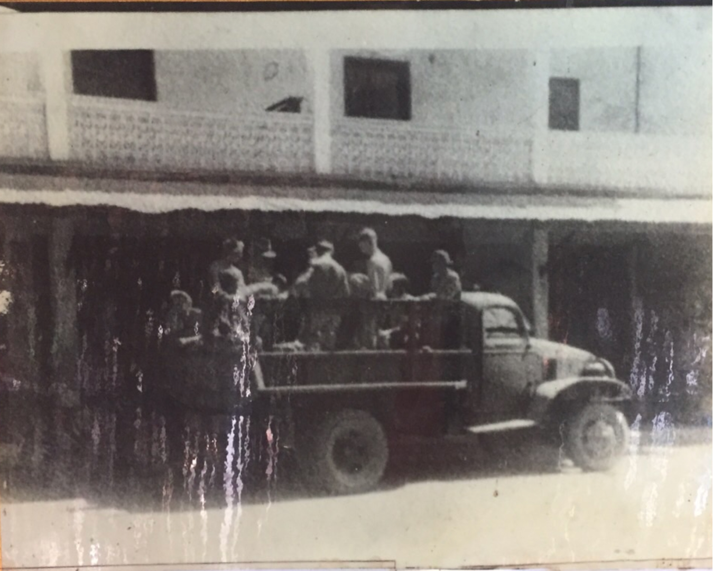
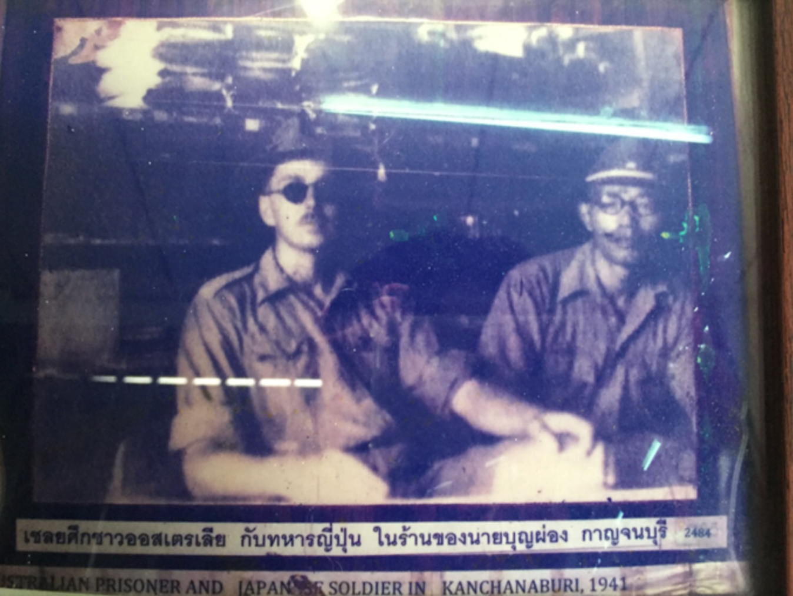

สงครามโลกครั้งที่ 2 เป็นความขัดแย้งในวงกว้าง ครอบคลุมทุกทวีปและประเทศส่วนใหญ่ในโลก
โดยสามารถแบ่งความขัดแย้งได้เป็นสองภูมิภาค
ส่วนที่ 1 คือ ในทวีปเอเชียบ้างว่าเริ่มขึ้นตั้งแต่ปี 1931 บ้างก็ว่าปี 1937
ในสงครามระหว่างจีนกับญี่ปุ่น และ ส่วนที่ 2 ในทวีปยุโรปเริ่มต้นเมื่อปี 1939 จากการรุกรานโปแลนด์
ของเยอรมนีและดำเนินไปจนกระทั่งสิ้นสุดในปี 1945 คาดว่ามีผู้เสียชีวิตในสงครามครั้งนี้มากกว่า 60 ล้านคน
นับเป็นสงครามที่ก่อให้เกิดความสูญเสียชีวิตมนุษย์มากที่สุดในประวัติศาสตร์ของมนุษย์ชาติ
ผู้เข้าร่วมในสงครามครั้งนี้แบ่งออกเป็นสองฝ่าย นั้นคือ
- ฝ่ายสัมพันธมิตรเดิมซึ่งประกอบด้วยอังกฤษ
- ฝรั่งเศสและสหภาพโซเวียต
ส่วนฝ่ายตรงข้าม เรียกว่าฝ่ายอักษะ นำโดย เยอรมนี อิตาลี และ ญี่ปุ่น
ประเทศไทยในฐานะประเทศในทวีปเอเชียตะวันออกเฉียงใต้ก็ได้มีส่วนเกี่ยวข้องกับมหาสงคราม
ในครั้งนี้ด้วย
ภายใต้สถานการณที่เรียกว่าสงครามมหาเอเชียบูรพา " สงครามหาเอเชียบูรพา " (The Great Asia Pacific
War)
เป็นสงครามที่เกิดขึ้นในภูมิภาคที่ตั้งอยู่ทางทิศตะวันออกเฉียงใต้ของเอเชีย ประเทศต่างๆ
เมื่อฝ่ายพันธมิตรตั้งกองบัญชาการรบในภูมิภาคนี้
สงครามครั้งนี้เป็นส่วนหนึ่งของสงครามโลกครั้งที่ 2
(พ.ศ. 2484 - 2488) และเมื่อในปี พ.ศ. 2485
ประเทศญี่ปุ่นได้จัดตั้งกระทรวงใหม่ คือ
" กระทรวงเอเชียบูรพา " เพื่อทำหน้าที่ดูแลประเทศทางภูมิภาคนี้โดยเฉพาะ
สงครามครั้งนี้ขยายสมรภูมิรบไปทั้งภูมิภาคแถบนี้
จึงเรียก สงครามนี้ว่า “สงครามมหาเอเชียบูรพา” นั่นเอง
ในช่วงแรกของสงครามโลกครั้งที่ 2 รัฐบาลไทยภายใต้การนำของรัฐบาลจอมพล ป. พิบูลสงครามนั้น
ประเทศไทยประกาศนโยบายเป็นกลาง กล่าวคือเป็นทางออกที่ดีที่สุดของไทยในขณะนั้น
เพราะเป็นการกีดกันไม่ให้คู่สงครามฝ่ายใดฝ่ายหนึ่งเข้ามาขอความช่วยเหลือหรือความร่วมมือจากไทย
ซึ่งเป็นการเอาประเทศเข้าไปพัวพันกับสงครามอีกทั้งประเทศไทยยังได้ทำกติกาสัญญาไม่รุกรานกับประเทศฝรั่งเศส
อังกฤษ
และทำสัญญาจำเริญพระราชไมตรีกับญี่ปุ่น แต่สงครามอินโดจีนก็เกิดขึ้น
ประเทศญี่ปุ่นได้ยื่นมือเข้ามาเป็นผู้ไกล่เกลี่ย
ในที่สุดรัฐบาลก็ตัดสินใจเลือกข้างญี่ปุ่น และประกาศสงครามกับอังกฤษและสหรัฐอเมริกา
สำหรับในพื้นที่จังหวัดกาญจนบุรีนั้น เหตุการณ์สำคัญเหตุการณ์หนึ่งที่ยังคงหลงเหลือหลักฐานอันเป็น
สัญลักษณ์แห่งสงครามและสันติภาพ คือ สะพานข้ามแม่น้ำแคว อันมีมูลเหตุในการก่อสร้างจากเหตุการณ์เมื่อ
วันที่ 9 ธันวาคม พ.ศ. 2484
ญี่ปุ่นยื่นคำขาดต่อรัฐบาลไทยขอสร้างทางรถไฟผ่านไปยังประเทศพม่า
เพื่อเป็นฐานทัพรุกเข้าไปในอินเดีย ซึ่งขณะนั้นอยู่ในการปกครองของอังกฤษ
จอมพล ป. พิบูลสงคราม นายกรัฐมนตรีของไทยในขณะนั้น จำเป็นต้องตกลงและยินยอมทำตาม
โดยได้ร่วมลงนามข้อตกลงการสร้างทางรถไฟเชื่อม
ระหว่างไทย – พม่า กาญจนบุรีจึงทำให้เข้ามาเกี่ยวข้องกับเหตุการณ์สงครามครั้งนี้
ซึ่งปรากฏหลักฐานที่เป็นแหล่ง
ประวัติศาสตร์สำคัญ อันได้แก่ สะพานข้ามแม่น้ำแคว สุสานทหารสัมพันธมิตร อนุสรณ์ไทยานุสรณ์
ทางรถไฟสายมรณะหรือถ้ำกระแซ ช่องเขาขาด ค่ายไทรโยค และทางรถไฟที่ด่านพระเจดีย์สามองค์
ในช่วงสงครามเต็ม
ไปด้วยความวุ่นวายและความโหดร้ายที่เกิดขึ้นกับเชลยสงครามที่ต้องใช้แรงงานในการสร้างทางรถไฟเส้น
ดังกล่าว
ชาวกาญจนบุรีต่างได้รับผลกระทบโดยเฉพาะอย่างยิ่งในช่วงที่มีการโจมตีจากฝ่ายสัมพันธมิตรในห้วงเวลานั้น
พิพิธภัณฑ์สงครามอักษะและเชลยศึกวัดไชยชุมพลชนะสงครามที่ท่านกำลังชมนี้มีการ จัดแสดงสภาพ
ของสถานที่อยู่ของเชลยศึกในสถานที่จริง วัตถุที่ใช้ในการทำสงคราม ภาพถ่ายเก่า และ
เครื่องใช้ของเชลยศึกที่
เป็นของจริง อยู่ใกล้สถานที่สำคัญที่เกี่ยวข้องกับเหตุการณ์สงครามโลกครั้งที่ 2 เช่น โรงงานกระดาษ
ถนนปากแพรก
เพื่อแสดงให้ท่านได้เชื่อมโยงความทรงจำของคนในพื้นที่ที่อยู่ในเหตุการณ์ กับสถานที่หรือสิ่งของที่จัด
แสดงภายในพิพิธภัณฑ์ อาคาร บ้านเรือน หรือสถานที่ในละแวกใกล้เคียง

